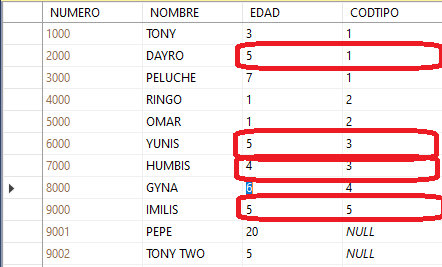

Cláusulas AND y OR
|
Supongamos la tabla de mascotas que se ve en la imagen. Si queremos imprimir los datos de las mascotas cuya edad es 5 y cuyo código de tipo es 3 (ambas condiciones se deben cumplir), la instrucción es la siguiente: SELECT * FROM MASCOTA WHERE EDAD = 5 AND CODTIPO = 3 La única mascota que cumple con las dos condiciones es YUNIS. Por ejemplo, IMILIS cumple con la condición de la edad, pero no cumple con la condición del código de tipo. Hay que recordar que en la tabla de verdad del AND, el resultado es verdadero cuando todas las proposiciones son verdaderas. |
|
|  |
Por otro lado, si al SELECT anterior le cambiamos el AND por el OR, de tal forma que la instrucción queda de la siguiente manera: SELECT * FROM MASCOTA WHERE EDAD = 5 OR CODTIPO = 3 Si ejecutamos el anterior SELECT, da como resultado las cuatro tuplas marcadas en rojo. Según la tabla de verdad del OR, el resultado es verdadero si alguna de las proposiciones es verdadera. La mascota HUMBIS cumple con la condición porque una de las dos condiciones es verdadera (CODTIPO = 3). Igualmente IMILIS y DAYRO (EDAD = 5). Para el caso de YUNIS, cumple con las dos condiciones, lo que hace que también salga en el resultado. |
|
Supongamos los siguientes casos: Caso No. 1: Resultado: 2 tuplas (rojo) SELECT * FROM MASCOTA WHERE EDAD = 5 AND (CODTIPO = 1 OR CODTIPO = 3) Caso No. 2: Resultado: 3 tuplas (azul) SELECT * FROM MASCOTA WHERE (EDAD = 5 AND CODTIPO = 1) OR CODTIPO = 3 Es muy importante mencionar que cuando en las condiciones del WHERE hay una combinación de ANDs y ORs, las condiciones se deben saber agrupar convenientemente con parentesis, segun lo que se necesita. Como se puede ver en el ejemplo, el caso No. 1 da como resultado dos tuplas, mientras el caso No. 2 da como resultado tres tuplas. Si hay una combinación de ANDs y ORs y no se colocan paréntesis, se debe saber que el AND tiene mayor prioridad que el OR, por lo tanto se evaluan primero. |
Cláusula BETWEEN
Para los datos anteriores, consideremos la siguiente necesidad: Consultar los datos de las mascotas cuya edad esté entre 1 y 4.
Podríamos hacer la consulta con la siguiente instrucción:
SELECT * FROM MASCOTA WHERE EDAD >= 1 AND EDAD <= 4
Dicha consulta también se podría hacer de la siguiente manera:
SELECT * FROM MASCOTA WHERE EDAD BETWEEN 1 AND 4
Ambas instrucciones generan el mismo resultado. La cláusula BETWEEN permite saber si el valor de un campo está en un rango de valores. El BETWEEN incluye el límite inferior y superior, es decir, en este caso, incluye mascotas que tengan 1 año y 4 años.
Cláusula IN
Consultar los datos de las mascotas que tengan alguna de las siguientes edades: 1, 5, 8, 11
Hay dos maneras de hacer la consulta:
SELECT * FROM MASCOTA WHERE EDAD = 1 OR EDAD = 5 OR EDAD = 8 OR EDAD = 11
SELECT * FROM MASCOTA WHERE EDAD IN (1, 5, 8, 11)
Con la cláusula IN podemos saber si el valor de un campo es igual a algún elemento de un conjunto de valores.
Cláusula LIKE
Vamos a consultar los datos de las mascotas cuyo nombre comience por la letra P (Peluche y Pepe, en este caso).
SELECT * FROM MASCOTA WHERE NOMBRE LIKE 'P%'
La cláusula LIKE permite saber si el valor de un campo cumple con un patrón. Para ello se vale de lo que se llaman caracteres comodines. En este caso, le estamos diciendo que consulte las mascotas cuyo nombre comience por la letra P (por eso, ponemos la P al principio de las comillas) y esté seguido por 0, 1 o más caracteres, sin importar cuales sean (ese es el significado del caracter comodín %).
Supongamos que queremos consultar los datos de las mascotas cuyo nombre termine por la letra S (Yunis, Humbis, Imilis en este caso).
La instrucción se transformaría de la siguiente manera:
SELECT * FROM MASCOTA WHERE NOMBRE LIKE '%S'
Y si queremos consultar los datos de las mascotas cuyo nombre contiene la letra G, sin importar en cuál posición (GYNA y RINGO, en este caso), la instrucción sería la siguiente:
SELECT * FROM MASCOTA WHERE NOMBRE LIKE '%G%'
En un apartado posterior de este curso, abordaremos otros caracteres comodines utilizados con el LIKE.
| Uso de AND y OR en el SELECT | Uso del BETWEEEN en el SELECT |
| Uso del IN en el SELECT | Uso del LIKE en el SELECT |